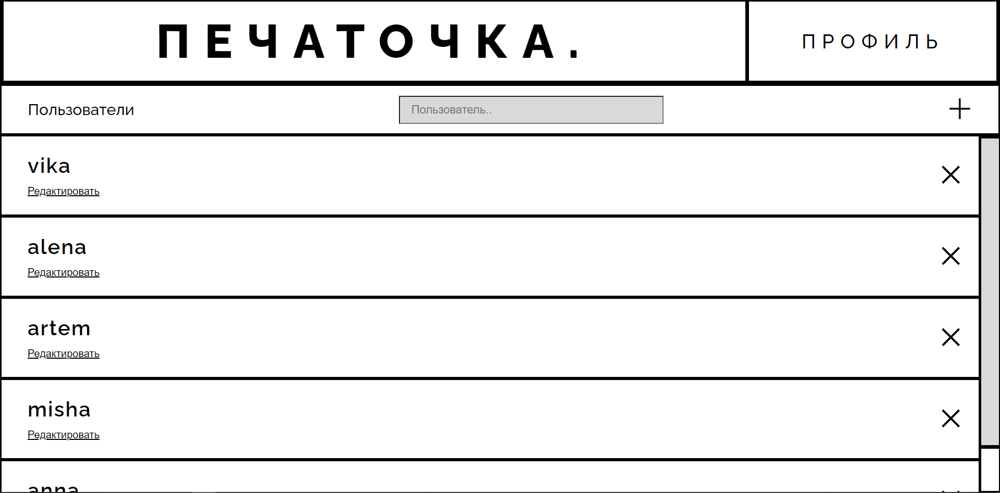
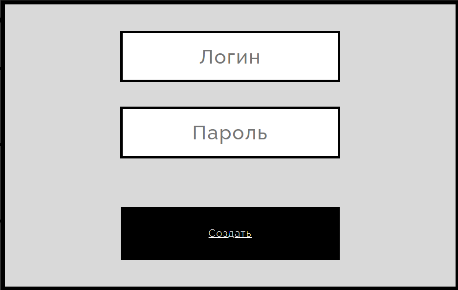
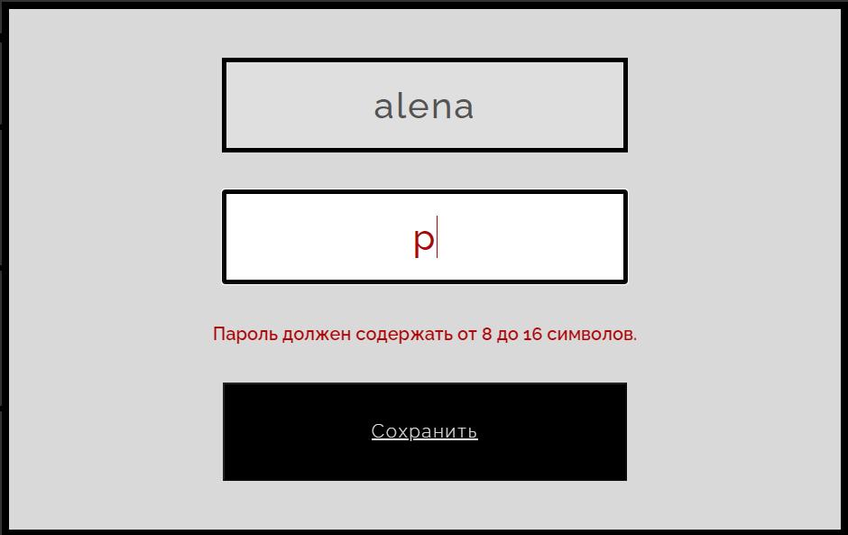

Режим работы администратора
При авторизации в качестве администратора пользователю отображается
"Административная панель", позволяющая перейти на страницу работы с упражнениями, пользователями или статистикой по нажатии на соответствующие кнопки.

Административная панель
Администратору доступны:
- Управление учетными записями обучаемых
- Настройка упражнений
- Настройка уровней сложности
- Просмотр собранной статистики
Наверх
Настройка учетных записей
По нажатии на кнопку "Пользователи" в панели администратор попадает на страницу просмотра списка пользователей.

Страница просмотра списка пользователей
По нажатии на кнопку "+" откроется окно для добавления новой учетной записи пользователя. Для добавления нового пользователя необходимо нажать кнопку "Создать",
предварительно заполнив следующие поля:

Добавление нового пользователя
По нажатии на кнопку "Редактировать" под логином одного из пользователей в списке откроется окно редактирования учетной записи выбранного пользователя.
Для редактирования учетной записи пользователя необходимо ввести новый пароль пользователя и нажать кнопку "Сохранить".
При некорректном вводе система отображает в окне сообщение об ошибке.

Редактирование учетной записи (Пример некорректного ввода пароля)
Наверх
Настройка уровней сложности
По нажатии на кнопку "Уровни сложности" в панели администратор попадает на страницу настройки уровней сложности.

Страница настройки уровней сложности.
При нажатии на одну из кнопок "1", "2", "3" или "4" на странице отобразятся настройки соответствующего уровня сложности.
Для изменения настройки уровня сложности необходимо ввести новые данные в соответствующих полях:
- для изменения минимального количества символов в упражении - в поле "Минимальное количество символов";
- для изменения максимального количества символов в упражении - в поле "Максимальное количество символов";
- для изменения максимального количества ошибок в упражении - в поле "Максимальное количество ошибок";
- для изменения максимального времени нажатия клавиши - в поле "Максимальное время нажатия";
- для изменения максимального кооличества зон тренировки - в поле "Максимальное количество зон тренировки".
Для сохранения настроек выбранного уровня необходимо нажать кнопку "Сохранить"
При некорректном вводе данных система отображает в окне сообщение об ошибке.
Наверх
Настройка упражнений
По нажатии на кнопку "Создание и редактирование упражнений" в панели администратор попадает на страницу просмотра списка упражнений.
Страница просмотра списка упражнений
По нажатии на кнопку "+" откроется окно для добавления нового упражнения. Для добавления нового упражнения необходимо:
- ввести название упражнения
- выбрать режим ввода упражнения путем нажатия на кнопку "Авто" - для выбора автоматического ввода, "Ручной" - для выбора режима ручного ввода,
"Файл" - для выбора режима загрузки из файла;
- в случае выбора автоматического режима или загрузки из файла - ввести длину;
- выбрать уровень сложности;
- в случае выбора режима ручного ввода - ввести текст упражнения;
- в случае выбора режима загрузки из файла - загрузить файл расширения *lern;
- нажать кнопку "Сохранить".
При некорректном вводе данных система отображает в окне сообщение об ошибке.
Добавление нового пользователя
По нажатии на кнопку "Редактировать" под названием одного из упражнений в списке откроется окно редактирования выбранного упражнения.
При редактироавнии упражнения есть возможность изменить:
режим ввода упражнения (путем нажатия на кнопку "Авто" - для выбора автоматического ввода, "Ручной" - для выбора режима ручного ввода,
"Файл" - для выбора режима загрузки из файла);
длину (в случае выбора автоматического режима или загрузки из файла);
уровень сложности;
текст упражнения (вручную - в случае выбора режима ручного ввода, путем згрузки файла расширения *lern - в случае выбора режима загрузки из файла).
При некорректном вводе данных система отображает в окне сообщение об ошибке.
Наверх
Просмотр статистики
По нажатии на кнопку "Статистика" в панели администратор попадает на панель выбора способа отображения статистики.

Панель выбора способа отображения статистики
По нажатии на кнопку "Все упражнения" в панели администратор попадает на страницу просмотра средней статистики по каждому упражнению.

Страница просмотра средней статистики по каждому упражнению
По нажатии на кнопку "Конкретное упражнение" в панели администратор попадает на страницу просмотра статистики по конкретному упражнению.

Страница просмотра статистики по конкретному упражнению
По нажатии на кнопку "v" откроется окно для выбора упражнения. Для выбора упражнения необходимо нажать на него в списке. Для поиска упражнения в списке необходимо ввести его маску в поле с учётом регистра.

Выбор упражнения
По нажатии на кнопку "По всем пользователям" в панели администратор попадает на страницу просмотра средней статистики по каждому пользователю.

Страница просмотра средней статистики по каждому пользователю
По нажатии на кнопку "Конкретный пользователь" в панели администратор попадает на страницу просмотра статистики по конкретному пользователю.

Страница просмотра статистики по конкретному пользователю
По нажатии на кнопку "v" откроется окно для выбора пользователя. Для выбора пользователя необходимо нажать на него в списке. Для поиска пользователя в списке необходимо ввести его маску в поле с учётом регистра.

Выбор пользователя
По нажатии на кнопку "Назад" на странице администратор возвращается на панель выбора способа отображения статистики.
По нажатии на кнопку "Профиль" на странице администратор пападет на административную панель.
Наверх
Режим работы обучаемого
При стартовом запуске приложения любой пользователь попадает на главную страницу.

Главная страница
На Главной странице обучаемый может ознакомитьмся со списком упражнений, отсортированных по уровню сложности, выбрать интересующий его уровень сложности и посмотреть его описание.
По нажатию на кпопку "Профиль" обучающийся перейдет на страницу своего профиля со статистикой
По нажатию на упражнение обучающийся перейдет на страницу с выполнением упражнения
Наверх

Страница прохождение упражнения
Обучаемый перед прохождением упражнения может скрыть экранную клавиатуру, нажав на кнопку "СКРЫТЬ" или настроить музыкальное сопровождение, нажав на кнопку "АУДИО".
Для того, чтобы начать упражнение, необходимо нажать клавишу "Пробел".
Наверх

Успешное прохождение
Если обучаемый проходит упражнение успешно, система выведет окно с успешным завершением. В случае неудачной попытки, с провальным прохождением. По нажатию кнопки "Главная"
обучаемый перейдет на главную страницу. По нажатию на кнопку "Повторить" система перезапустит упражнение.
Наверх
По нажатию на переключатель "Звуковые эффекты" можно включить или выключить звук при наборе текста в упражнении. Нажатие на переключатель "Музыка" включит или выключит музыку в упражнении.
Нажатие на переключатель "ВЫбор музыкального сопровождения" изменит музыку на выбранную композицию.
Наверх
Просмотр собственой статистики

Страница со статистикой обучаемого
На данной странице обучаемый может ознакомиться со своей статистикой по всем пройденным им упражнениям. Нажатие на кнопку "СПРАВКА" откроет справку о разработчиках. Нажатие на кнопку "НАЗАД"
перенаправит обучаемого на главную страницу. Нажатие на кнопку "ВЫХОД" разлогинет обучаемого и вернет на главную страницу.
Наверх